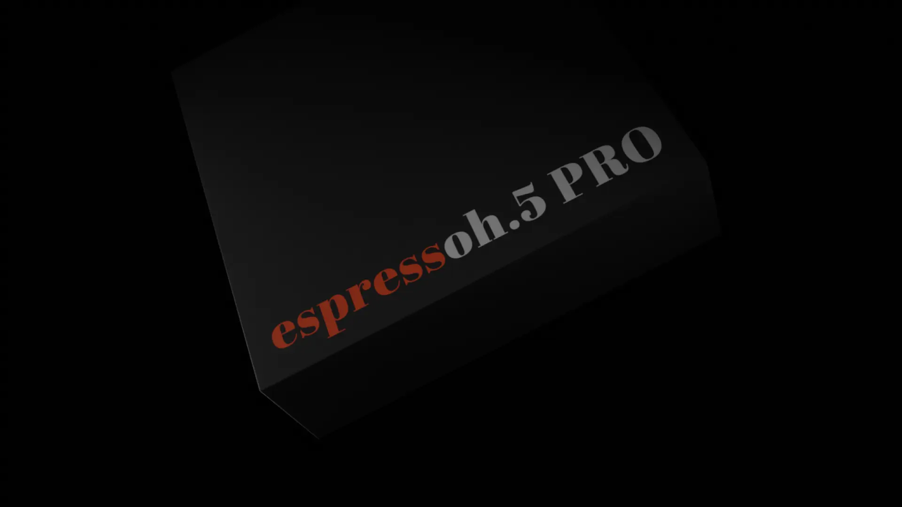
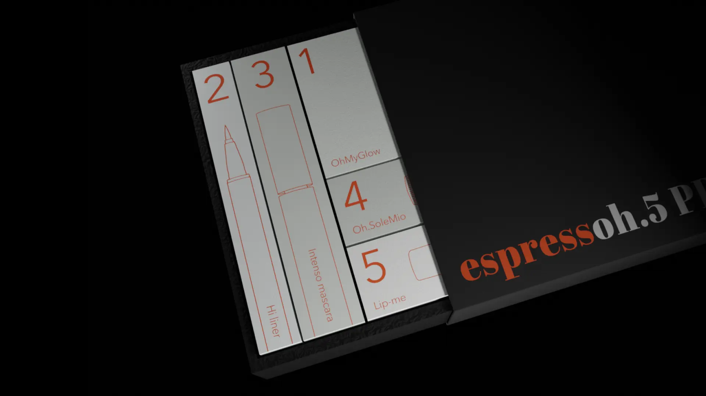
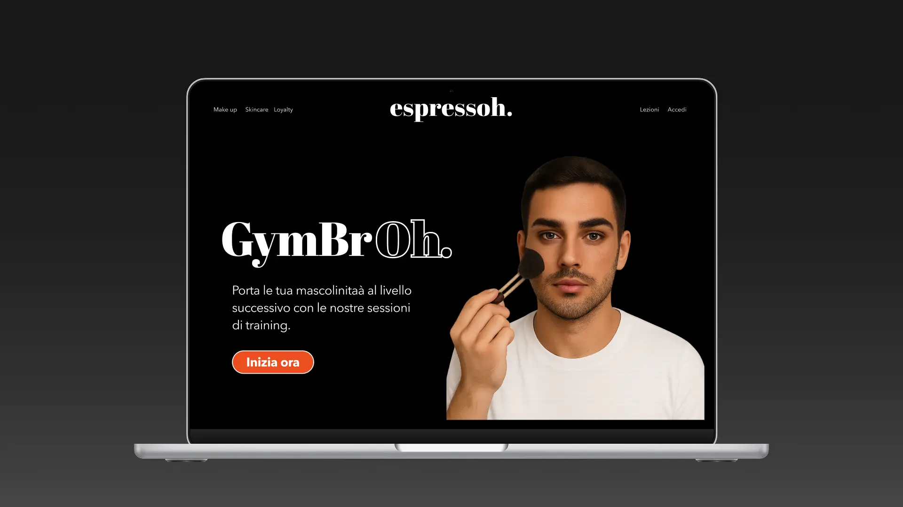
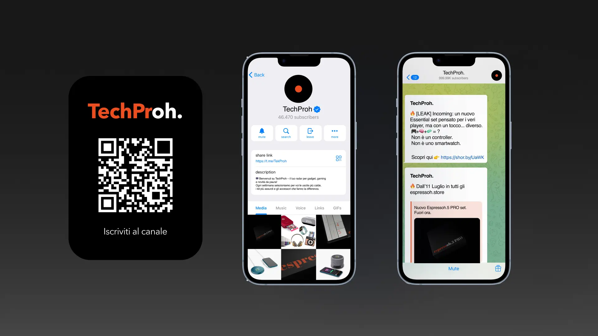

Il progetto ipotizza una collaborazione con espressoh, marchio italiano di make-up minimalista e inclusivo, e sviluppa un nuovo kit dedicato al pubblico maschile. L’obiettivo è ridefinire il rapporto tra uomo e trucco, spostando la narrazione dal campo estetico a quello dell’autenticità personale.
Gli uomini, quando si avvicinano a una nuova attività, puntano subito al "top di gamma". Che si tratti di sport, cucina o tecnologia, la scelta ricade sempre sul top di gamma.



